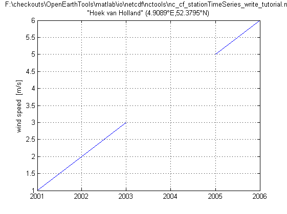

Contents
- Create netCDF-CF of a timeseries
- Define meta-info: global
- Define dimensions/coordinates
- Define variable (define some data)
- 1.a Create netCDF file
- 1.b Add overall meta info
- 2 Create matrix span dimensions
- 3.a Create coordinate variables: time
- 3.b Create coordinate variables: longitude
- 3.c Create coordinate variables: latitude
- 3.d Create coordinate variables: coordinate system: WGS84 default
- 3.e Station number/name/code: proposed on:
- 4 Create dependent variable
- 5.a Create all variables with attributes
- 5.b Fill all variables
- 6 Check file summary
- 7.a Load the data: using the variable names from nc_dump
- 7.b Load the data: using standard_names and coordinate attribute
- 7.c Load the data: using a dedicated function developed for grids
Create netCDF-CF of a timeseries
example of how to make a netCDF file with CF conventions of a variable that is a timeseries. In this special case the main dimension coincides with the time axis.
This case is described in: * http://cf-pcmdi.llnl.gov/documents/cf-conventions/1.4/cf-conventions.html#id2984788 (simple) * https://cf-pcmdi.llnl.gov/trac/wiki/PointObservationConventions (full definition)
%See also: SNCTOOLS, NC_CF_STATIONTIMESERIES,... % NC_CF_GRID_WRITE_LAT_LON_ORTHOGONAL_TUTORIAL, % NC_CF_GRID_WRITE_LAT_LON_CURVILINEAR_TUTORIAL, % NC_CF_GRID_WRITE_X_Y_ORTHOGONAL_TUTORIAL % NC_CF_GRID_WRITE_X_Y_CURVILINEAR_TUTORIAL % This tool is part of <a href="http://www.OpenEarth.eu">OpenEarthTools</a> under the <a href="http://www.gnu.org/licenses/gpl.html">GPL</a> license.
Define meta-info: global
OPT.title = ''; OPT.institution = ''; OPT.source = ''; OPT.history = ['tranformation to netCDF: $HeadURL: https://repos.deltares.nl/repos/OpenEarthTools/trunk/matlab/io/netcdf/nctools/nc_cf_stationTimeSeries_write_tutorial.m $']; OPT.references = ''; OPT.email = ''; OPT.comment = ''; OPT.version = ''; OPT.acknowledge =['These data can be used freely for research purposes provided that the following source is acknowledged: ',OPT.institution]; OPT.disclaimer = 'This data is made available in the hope that it will be useful, but WITHOUT ANY WARRANTY; without even the implied warranty of MERCHANTABILITY or FITNESS FOR A PARTICULAR PURPOSE.';
Define dimensions/coordinates
OPT.lon = 4.908893108;
OPT.lat = 52.37952805;
OPT.station_name = 'Hoek van Holland';
OPT.wgs84.code = 4326;
Define variable (define some data)
OPT.val = [1 2 3 nan 5 6]; OPT.datenum = datenum(2001:2006,1,1); OPT.timezone = '+01:00'; % MET=+1 OPT.varname = 'windspeed'; % free to choose: will appear in netCDF tree OPT.units = 'm/s'; % from UDunits package: http://www.unidata.ucar.edu/software/udunits/ OPT.long_name = 'wind speed '; % free to choose: will appear in plots OPT.standard_name = 'wind_speed'; OPT.val_type = 'single'; % 'single' or 'double' OPT.fillvalue = nan;
1.a Create netCDF file
ncfile = fullfile(fileparts(mfilename('fullpath')),[mfilename,'.nc']); nc_create_empty (ncfile)
1.b Add overall meta info
http://cf-pcmdi.llnl.gov/documents/cf-conventions/1.4/cf-conventions.html#description-of-file-contents
nc_attput(ncfile, nc_global, 'title' , OPT.title); nc_attput(ncfile, nc_global, 'institution' , OPT.institution); nc_attput(ncfile, nc_global, 'source' , OPT.source); nc_attput(ncfile, nc_global, 'history' , OPT.history); nc_attput(ncfile, nc_global, 'references' , OPT.references); nc_attput(ncfile, nc_global, 'email' , OPT.email); nc_attput(ncfile, nc_global, 'comment' , OPT.comment); nc_attput(ncfile, nc_global, 'version' , OPT.version); nc_attput(ncfile, nc_global, 'Conventions' , 'CF-1.4'); nc_attput(ncfile, nc_global, 'CF:featureType', 'Grid'); % https://cf-pcmdi.llnl.gov/trac/wiki/PointObservationConventions nc_attput(ncfile, nc_global, 'terms_for_use' , OPT.acknowledge); nc_attput(ncfile, nc_global, 'disclaimer' , OPT.disclaimer);
2 Create matrix span dimensions
http://cf-pcmdi.llnl.gov/documents/cf-conventions/1.4/cf-conventions.html#dimensions
nc_add_dimension(ncfile, 'time' , length(OPT.datenum)); nc_add_dimension(ncfile, 'string' , length(OPT.station_name)); % you could set this to UNLIMITED, be we suggest to keep UNLIMITED for time % If you would like to include more locations of the same data, % you can optionally use 'location' as a 2nd dimension. % Here we use it for one station too, to be able to link cordinates. nc_add_dimension(ncfile, 'location', 1);
3.a Create coordinate variables: time
http://cf-pcmdi.llnl.gov/documents/cf-conventions/1.4/cf-conventions.html#time-coordinate
% For time we use "x units since reference_date + timezone", where % * x can be a character or number, % * units can be any units from UDunits: e.g. days, seconds, years, ... % * reference_date is the moment where t-0 is defined in ISO notation % * timezone offset from GMT, in format -/+ HH:00 % For reference_date we advice to use a common epoch. Although gthis is a % matlab tutorial, the matlab datenumber convention is not adviced: % Here a a serial date number of 1 corresponds to Jan-1-0000. However, this % epoch gives wrong dates in ncbrowse, as it uses a different calender. The % Excel epoch of 31-dec-1899 is too stupid to be worth mentioning. The Apple % convenction of 1980 has been superseded since Apple uses unix as a basis. So % * 1970-01-01 is adviced to use as epoch, the very common linux datenumber % convention (which has no calender issues). OPT.refdatenum = datenum(1970,1,1); clear nc;ifld = 1; nc(ifld).Name = 'time'; % dimension 'time' is here filled with variable 'time' nc(ifld).Nctype = 'double'; % time should always be in doubles nc(ifld).Dimension = {'time'}; nc(ifld).Attribute( 1) = struct('Name', 'long_name' ,'Value', 'time'); nc(ifld).Attribute(end+1) = struct('Name', 'units' ,'Value', ['days since ',datestr(OPT.refdatenum,'yyyy-mm-dd'),' 00:00:00 ',OPT.timezone]); nc(ifld).Attribute(end+1) = struct('Name', 'standard_name' ,'Value', 'time'); nc(ifld).Attribute(end+1) = struct('Name', 'actual_range' ,'Value', [min(OPT.datenum(:)) max(OPT.datenum(:))]-OPT.refdatenum);
3.b Create coordinate variables: longitude
http://cf-pcmdi.llnl.gov/documents/cf-conventions/1.4/cf-conventions.html#longitude-coordinate
ifld = ifld + 1; nc(ifld).Name = 'lon'; nc(ifld).Nctype = 'double'; nc(ifld).Dimension = {'location'}; nc(ifld).Attribute( 1) = struct('Name', 'long_name' ,'Value', 'longitude'); nc(ifld).Attribute(end+1) = struct('Name', 'units' ,'Value', 'degrees_east'); nc(ifld).Attribute(end+1) = struct('Name', 'standard_name' ,'Value', 'longitude'); nc(ifld).Attribute(end+1) = struct('Name', 'actual_range' ,'Value', [min(OPT.lon(:)) max(OPT.lon(:))]); nc(ifld).Attribute(end+1) = struct('Name', 'coordinates' ,'Value', 'lat lon'); nc(ifld).Attribute(end+1) = struct('Name', 'grid_mapping' ,'Value', 'wgs84');
3.c Create coordinate variables: latitude
http://cf-pcmdi.llnl.gov/documents/cf-conventions/1.4/cf-conventions.html#latitude-coordinate
ifld = ifld + 1; nc(ifld).Name = 'lat'; nc(ifld).Nctype = 'double'; nc(ifld).Dimension = {'location'}; nc(ifld).Attribute( 1) = struct('Name', 'long_name' ,'Value', 'latitude'); nc(ifld).Attribute(end+1) = struct('Name', 'units' ,'Value', 'degrees_north'); nc(ifld).Attribute(end+1) = struct('Name', 'standard_name' ,'Value', 'latitude'); nc(ifld).Attribute(end+1) = struct('Name', 'actual_range' ,'Value', [min(OPT.lat(:)) max(OPT.lat(:))]); nc(ifld).Attribute(end+1) = struct('Name', 'coordinates' ,'Value', 'lat lon'); nc(ifld).Attribute(end+1) = struct('Name', 'grid_mapping' ,'Value', 'wgs84');
3.d Create coordinate variables: coordinate system: WGS84 default
global ellispes: WGS 84, ED 50, INT 1924, ETRS 89 and the upcoming ETRS update etc. http://cf-pcmdi.llnl.gov/documents/cf-conventions/1.4/cf-conventions.html#grid-mappings-and-projections http://cf-pcmdi.llnl.gov/documents/cf-conventions/1.4/cf-conventions.html#appendix-grid-mappings
ifld = ifld + 1; nc(ifld).Name = 'wgs84'; % preferred nc(ifld).Nctype = nc_int; nc(ifld).Dimension = {}; nc(ifld).Attribute = nc_cf_grid_mapping(OPT.wgs84.code); var2evalstr(nc(ifld).Attribute)
ans = variable1(1).Name = 'name'; variable1(1).Value = 'WGS 84'; variable1(2).Name = 'epsg'; variable1(2).Value = 4326; variable1(3).Name = 'grid_mapping_name'; variable1(3).Value = 'latitude_longitude'; variable1(4).Name = 'semi_major_axis'; variable1(4).Value = 6378137; variable1(5).Name = 'semi_minor_axis'; variable1(5).Value = 6356752.3142; variable1(6).Name = 'inverse_flattening'; variable1(6).Value = 298.2572; ...
3.e Station number/name/code: proposed on:
https://cf-pcmdi.llnl.gov/trac/wiki/PointObservationConventions
ifld = ifld + 1; nc(ifld).Name = 'station_id'; nc(ifld).Nctype = 'char'; nc(ifld).Dimension = {'location','string'}; nc(ifld).Attribute(1) = struct('Name', 'long_name' ,'Value', 'station identification code'); nc(ifld).Attribute(2) = struct('Name', 'standard_name' ,'Value', 'station_id'); % standard name
4 Create dependent variable
http://cf-pcmdi.llnl.gov/documents/cf-conventions/1.4/cf-conventions.html#variables Parameters with standard names: http://cf-pcmdi.llnl.gov/documents/cf-standard-names/standard-name-table/current/
ifld = ifld + 1;
nc(ifld).Name = OPT.varname;
nc(ifld).Nctype = nc_type(OPT.val_type);
nc(ifld).Dimension = {'location','time'};
nc(ifld).Attribute( 1) = struct('Name', 'long_name' ,'Value', OPT.long_name );
nc(ifld).Attribute(end+1) = struct('Name', 'units' ,'Value', OPT.units );
nc(ifld).Attribute(end+1) = struct('Name', '_FillValue' ,'Value', OPT.fillvalue );
nc(ifld).Attribute(end+1) = struct('Name', 'actual_range' ,'Value', [min(OPT.val(:)) max(OPT.val(:))]);
nc(ifld).Attribute(end+1) = struct('Name', 'coordinates' ,'Value', 'lat lon');
nc(ifld).Attribute(end+1) = struct('Name', 'grid_mapping' ,'Value', 'epsg');
nc(ifld).Attribute(end+1) = struct('Name', 'standard_name' ,'Value', OPT.standard_name);
5.a Create all variables with attributes
for ifld=1:length(nc) nc_addvar(ncfile, nc(ifld)); end
5.b Fill all variables
nc_varput(ncfile, 'time' , OPT.datenum - OPT.refdatenum); nc_varput(ncfile, 'lon' , OPT.lon ); nc_varput(ncfile, 'lat' , OPT.lat ); nc_varput(ncfile, 'wgs84' , OPT.wgs84.code ); nc_varput(ncfile, 'station_id' , OPT.station_name); nc_varput(ncfile, OPT.varname , OPT.val );
6 Check file summary
nc_dump(ncfile); fid = fopen(fullfile(fileparts(mfilename('fullpath')),[mfilename,'.cdl']),'w'); nc_dump(ncfile,fid); fclose(fid)
netCDF F:\checkouts\OpenEarthTools\matlab\io\netcdf\nctools\nc_cf_stationTimeSeries_write_tutorial.nc {
dimensions:
time = 6 ;
string = 16 ;
location = 1 ;
variables:
// Preference 'PRESERVE_FVD': false,
// dimensions consistent with ncBrowse, not with native MATLAB netcdf package.
double time(time), shape = [6]
time:long_name = "time"
time:units = "days since 1970-01-01 00:00:00 +01:00"
time:standard_name = "time"
...7.a Load the data: using the variable names from nc_dump
Da.datenum = nc_varget(ncfile,'time') + datenum(1970,1,1); Da.var = nc_varget(ncfile,'windspeed')
Da = dep: [3x5 double] lat: [3x1 single] lon: [5x1 single] datenum: [6x1 double] var: [1 2 3 NaN 5 6]
7.b Load the data: using standard_names and coordinate attribute
Db.datenum = nc_cf_time(ncfile); varname = nc_varfind(ncfile,'attributename', 'standard_name', 'attributevalue', 'wind_speed') Db.var = nc_varget(ncfile,OPT.varname);
varname = windspeed
7.c Load the data: using a dedicated function developed for grids
[Dc,Mc] = nc_cf_stationTimeSeries(ncfile,OPT.varname,'plot',1);
